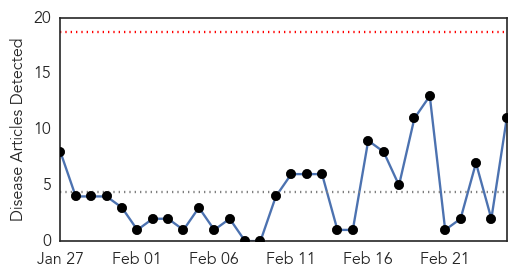
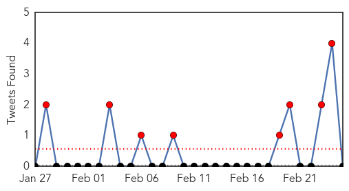
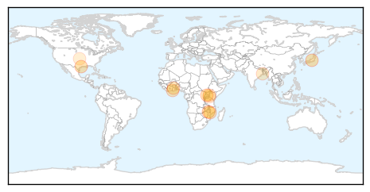
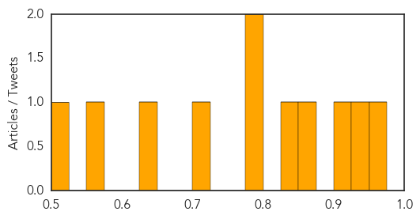

MERS
30-Day Web Trend
18 alerts, 0 warnings

30-Day Twitter Trend
7 alerts, 0 warnings

Article Locations

Article Confidences

Top Articles:
Top Tweets:
- 0.622
- RT: MERS-CoV cases with known city of infection in Saudi Arabia Jan-Feb 2015. Read more: http://t.co/Ej7cSdJySh http://t.…
- 0.622
- RT: MERS-CoV cases with known city of infection in Saudi Arabia Jan-Feb 2015. Read more: http://t.co/Ej7cSdJySh http://t.…
Cholera
30-Day Web Trend
0 alerts, 0 warnings

30-Day Twitter Trend
4 alerts, 0 warnings

Article Locations
Article Confidences
Top Articles:
- 0.963
- Mozambique: President Nyusi meets Cholera Emergency Group
- 0.936
- Travel vaccines for going down south
- 0.902
- Cholera Outbreak Feared in Syria's Future
- 0.863
- Rugunda: Out of 100 Ugandan Children, 33 are Stunted
- 0.848
- Devastation and disease after deadly Malawi floods
- 0.793
- W/R GHS to lay down tools over unpaid NHIS debts
- 0.791
- Healthcare delivery in Western Region threatened
- 0.708
- Food hawking banned as cholera spreads to Kisii - Kenya
- 0.636
- Be grateful for the pleasures of the flush
- 0.555
- Kenya: Food hawking banned as cholera spreads to Kisii
- 0.516
- Non-profit increases safe water to flooding victims in Malawi
Top Tweets:
-
No tweets found for Feb 25, 2015